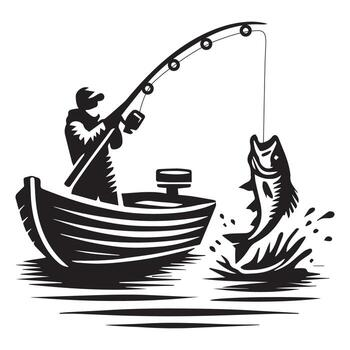

About
I'm from Baltimore, Maryland, but I currently reside in Austin, Texas. I go Texas Tech University and I'm majoring in Computer Applications. I'm interested and determined to find a job in Network Engineering and, possibly, Cyber Security one day. Other than computers, I have interests in a variety of things, but I’ll name two main interests: fishing and basketball. I've been fishing since May 2025 - yes, I'm new to fishing, and I have been playing and watching basketball since I was 10 years old.
